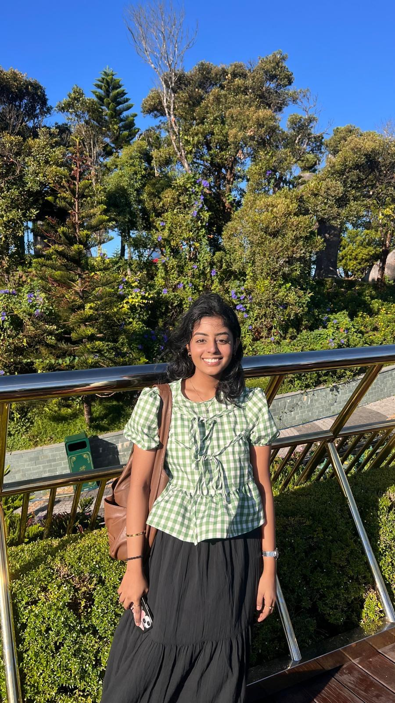

Helloo
I build for
Student | Developer
you
feed · bubbles · color
emotion.
Helloo
Student | Developer
feed · bubbles · color
emotion.
Quest moodboard: tap any pin to open it, and heart your favourites ♡

Hi, I am Meenakchi! I am currently a Year 3 student at Singapore Polytechnic, pursuing a diploma in Information Technology with a specialization in software development and a minor in data and artificial intelligence. I am a passionate student developer with a strong drive for solving complex problems, building impactful solutions, and helping others along the way.